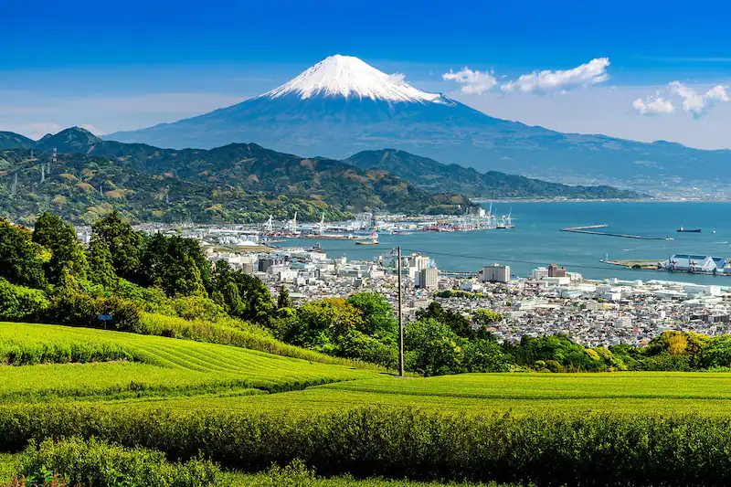

Shizuoka
Shizuoka est la capitale de la préfecture éponyme, située à mi-chemin entre Tokyo et Kyoto sur Honshu. Ville de province aux airs tranquilles, elle garde les traces du règne du shogun Tokugawa Ieyasu. Son activité touristique se concentre dans les environs de sa gare principale puis en allant vers la côte Pacifique. Par beau temps, on y aperçoit le Mont Fuji en toile de fond.
On associe d'abord Shizuoka à la préfecture éponyme avec ses nombreux champs de thé vallonés et surplombés par le Fuji-san, mais il ne faut pas oublier la ville nichée entre les Alpes du sud et la mer. Très pratique d'accès car sur la route du Tokaido, elle possède une longue histoire. Elle a ainsi vu grandir le futur shogun Tokugawa Ieyasu qui passa une bonne partie de sa jeunesse à Sunpu, l'ancien nom de Shizuoka. Marqué par ces années, il demanda d'ailleurs d'y finir ses jours. On peut aujourd'hui visiter le parc du château de Sunpu ainsi que le rutilant sanctuaire Kunozan Toshogu, premier mausolée à sa gloire avant que ses restes ne soient déplacés à Nikko.
Outre les stigmates du passé disséminés ci et là entre le centre-ville et la côte maritime, Shizuoka se présente comme une ville de province à l'architecture moderne et où il fait bon vivre ; autrement dit, on y trouve toutes les commodités urbaines dans une atmosphère plus détendue qu'à Tokyo. Les abords de la gare Shinkansen accueillent de nombreux hôtels classiques à l'occidentale et ses rues adjacentes fourmillent d'animation quotidienne : cafés, restaurants, magasins.
On conseille notamment d'emprunter la rue commerçante Sengen Dori, surplombée par un torii et située à une quinzaine de minutes à pied au nord-ouest de la gare. Elle débouche sur le parc Shizuhatayama. Aménagé sur une colline, il abrite de nombreux cerisiers et sanctuaires shinto dont Shizuoka Sengen. Son sommet offre aux grimpeurs une très jolie vue sur la ville, lieu idéal pour un pique-nique au printemps.